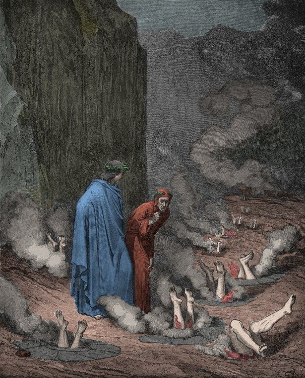

I poeti scendono nella terza bolgia di Malebolge, dove sono puniti i simoniaci, coloro che hanno fatto commercio di cose sacre. I peccatori sono conficcati a testa in giù in stretti fori nella roccia, con le piante dei piedi tormentate dalle fiamme. Dante dialoga duramente con l'anima capovolta di papa Niccolò III, profetizzando anche la condanna di Bonifacio VIII e Clemente V.
I poeti raggiungono la quarta bolgia, dove camminano i maghi, gli indovini e i falsi profeti. La loro pena consiste nell'avere il collo e il volto completamente girati all'indietro, costretti a camminare per sempre a ritroso poiché in vita vollero guardare troppo avanti nel futuro. Virgilio indica a Dante varie anime celebri, tra cui l'indovina Manto, spiegando le origini mitiche di Mantova.
